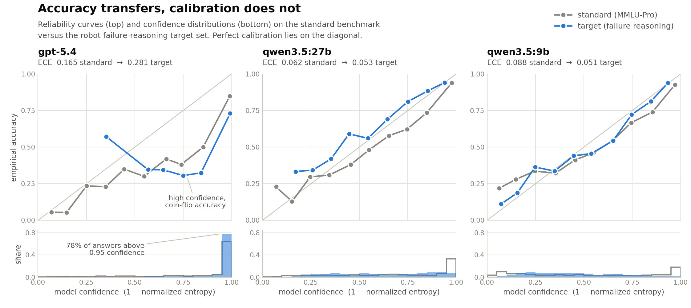

Original task: Boil Water
Original failure reason: The robot put the pot in sink after the faucet was turned off, as a result, the pot was not filled with water.
Detected failure reason: The plan turned the faucet on and off before placing the pot in the sink, so the pot was never actually filled with water.
Replan step 0:
proposing candidates...
Selecting from candidates...
Executing: (pick_up, Pot)
Replan step 1:
proposing candidates...
Selecting from candidates...
Executing: (put_in, Pot, Sink)
Replan step 2:
proposing candidates...
Selecting from candidates...
Executing: (toggle_on, Faucet)
Replan step 3:
proposing candidates...
Selecting from candidates...
Executing: (toggle_off, Faucet)
Replan step 4:
proposing candidates...
Selecting from candidates...
Executing: (pick_up, Pot)
Replan step 5:
proposing candidates...
Selecting from candidates...
Executing: (put_on, Pot, StoveBurner-4)
Replan step 6:
proposing candidates...
Selecting from candidates...
Success: True
Accuracy is not enough
Recent advances in LLMs, VLMs, and more recently VLAs have significantly expanded the capabilities of foundation models in physical environments. However, to deploy these systems in homes, factories, and other human environments, we must establish when their outputs can be trusted. Accuracy alone is insufficient. Knowing when a model is likely to be uncertain or wrong is critical for handling failure cases safely and escalating issues when necessary. Reliable deployment therefore requires more than high accuracy. A model that is consistently overconfident when incorrect provides misleading uncertainty estimates, while a model that is consistently underconfident when correct cannot be relied upon to make autonomous decisions. Safe deployment therefore requires models that produce calibrated uncertainty estimates alongside accurate predictions.
Our experiments show that strong performance on large-scale general-domain datasets does not guarantee equivalent behaviour under downstream distributions. Foundation models exhibit different calibration behaviour across environments. In our experiments, accuracy transferred from a general benchmark to our failure-reasoning task largely unchanged, whereas calibration did not. Models should therefore always be evaluated on the target distribution rather than relying solely on standard benchmarks.
Note on experiment methodology
The experiments compare LLM behaviour across two datasets using identical evaluation conditions and metrics. The reference benchmark is MMLU-Pro, a general-knowledge benchmark. The target dataset consists of 821 multiple-choice questions generated from REFLECT's RoboFail ground-truth failure annotations. These questions cover outcome verification, failure localization, failure attribution, and missing-step identification, and are designed such that the execution trace is required to answer them.
How we read the model's confidence
We derive confidence as 1 − normalized entropy of the answer-token log-probabilities, following the methodology introduced by KnowNo and KnowLoop. A review of the literature showed that self-stated confidence is generally unreliable and highly context dependent, whereas normalized entropy derived from log-probabilities provides a comparable uncertainty measure regardless of the model, context, or option set size. Although this is not the only approach for estimating uncertainty from foundation models, it provides a simple and model-agnostic confidence signal. Future work may explore or combine alternative methods such as API Is Enough and To Believe or Not to Believe Your LLM.
How we verified the results
The results were verified using multiple complementary metrics. Our primary metric was Expected Calibration Error (ECE), which measures the discrepancy between predicted confidence and empirical accuracy. Because ECE is known to be sensitive to binning artifacts, we also computed the Brier score and Negative Log-Likelihood (NLL) to verify that the observed trends were not artifacts of the chosen binning strategy. Population weights were applied so that conclusions could be generalized to the full dataset even when evaluations were performed on subsamples. To ensure that the question-generation pipeline did not introduce degenerate questions, we manually annotated a representative subsample and measured the degenerate rate, defined as the proportion of questions that were either unanswerable or admitted multiple correct answers. The analysis confirmed a low degenerate rate (2%), indicating that the generated benchmark is of sufficient quality for the reported evaluation.
Key findings
Calibration on MMLU-Pro (standard) versus the failure-reasoning target set. Confidence is 1 - normalized entropy of the answer-token logprobs. ECE is expected calibration error, Brier and NLL are strictly proper scoring rules, and for all three lower is better.
| Model | Std acc | Std ECE | Std Brier | Std NLL | Tgt acc | Tgt ECE | Tgt Brier | Tgt NLL |
|---|---|---|---|---|---|---|---|---|
| gpt-5.4 | 0.688 | 0.165 | 0.182 | 0.929 | 0.665 | 0.281 | 0.281 | 1.968 |
| qwen3.5:27b | 0.644 | 0.062 | 0.157 | 0.482 | 0.670 | 0.053 | 0.178 | 0.529 |
| qwen3.5:9b | 0.523 | 0.088 | 0.188 | 0.569 | 0.446 | 0.051 | 0.214 | 0.616 |
- gpt-5.4 beats qwen3.5:9b on MMLU-Pro under the Brier score (0.182 vs 0.188) but loses to it on failure reasoning (0.281 vs 0.214). A standard benchmark can misrank which model's confidence is safe to act on. ECE and NLL keep the same ordering on both sets.
- On the target set, gpt-5.4's predicted confidence saturates around 0.94 and is largely independent of correctness, so a confidence threshold would reject very few predictions.
- Miscalibration concentrates on the hard diagnostic tasks (localization 0.322, attribution 0.366) and grows with difficulty. Outcome verification is easy and well calibrated (0.845, ECE 0.041).

The DRR recovery loop
DRR extends REFLECT by replacing one-shot recovery with a closed-loop recovery procedure guided by model uncertainty.
A chain-of-thought model proposes candidate next actions, including an explicit option to terminate, and a second, non-CoT model makes the final choice, so the normalized entropy of its answer tokens is the same confidence signal we measured above. Conformal prediction then turns that signal into a guarantee. A single-action prediction set is executed autonomously, while a larger set halts and escalates directly to a human.
Reproducing REFLECT
Over all 100 simulated failure episodes (percentages; REFLECT figures from the paper's Table 1).
| Metric | DRR exec | DRR plan | DRR all | REFLECT (exec/plan) |
|---|---|---|---|---|
| Explanation | 92.4 | 85.3 | 90.0 | 88.4 / 84.2 |
| Localization | 75.8 | 88.2 | 80.0 | 96.0 / 80.7 |
| Correction plan | 45.5 | 52.9 | 48.0 | 79.1 / 80.7 |
Explanation performance matches or exceeds the results reported in the original paper, while localization remains close. Correction planning remains the largest performance gap, which is consistent with our calibration results showing that diagnostic reasoning and recovery planning are the most challenging components of the task. Human-scored explanation accuracy improved from 57.6% in the initial reproduction to 90.0% in the final pipeline.
Scope and future work
This project explores how reliability-aware robotic systems built on foundation models could be structured. We conducted an in-depth investigation of existing approaches, analysing both their strengths and limitations with the objective of reporting results as faithfully as possible rather than optimizing for benchmark performance. The work is intended as an analysis of the current state of the field and an exploration of promising directions for future research, with safe autonomous execution serving as the primary focus of the proposed framework.
Several directions remain outside the scope of this work and represent opportunities for future research. These include alternative uncertainty estimation methods, applying the proposed approach to emerging Vision-Language-Action (VLA) models, understanding how uncertainty propagates from perception to reasoning, and developing adaptive recovery behaviours.
Get started
git submodule update --init --recursive
conda env create -f environment/environment.yml
conda activate reflect-py314
reflect-check # verify paths, keys, dependencies
reflect-sim --tasks boilWater --episodes boilWater-1 \
--backend local --model qwen3.5:9bFull installation, CLI reference, and data policy are in the README.
Citation
If you build on this work, please cite:
@misc{urbano2026drr,
title = {DRR: Detect, Reason, Re-plan --- When can we trust an LLM's failure reasoning?},
author = {Urbano, Aleix and Mossavat, Iman},
year = {2026},
url = {https://github.com/aleixurbano/DRR}
}DRR builds on REFLECT (Liu, Bahety, and Song, 2023); please also cite the original framework where appropriate.